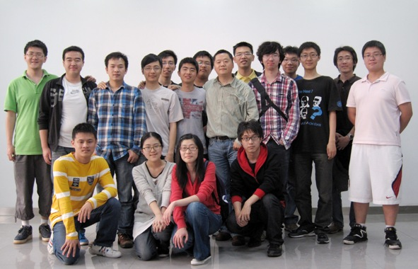

Home
Research
People
Publications
Teaching
Resources and links
Contact
Wiki
Links
Shanghai JiaoTong University
Computer Science Department
Resources and useful links

Good research advices
Useful links
Utilities
Online readings
Good research advices
What's the right way to do scientific experiments
Amer Diwan @ PLDI 2012.
How to write a good research paper
Simon Peyton Jones.
How to give a good research talk
Simon Peyton Jones.
Useful links
Coference listings
Impact ratio
DBLP
CiteSeer
Math symbols for LaTex
Utilities
Pandoc
A universal document converter
TextMate Bundles for Ruby on Rails:
1
2
3
4
5
6
7
TextMate Bundle for Haskell
TextMate Bundle for Io
Cena - Offline Judge
MultiMarkdown
Online readings
Effectively Using Git With Subversion
Great Hackers
by
Paul Graham
Lua Coroutines Tutorial
Reading C type declarations
Learn Prolog
Developing Backbone.js Applications
The Architecture of Open Source Applications
(
Chinese translation
)
Build your own compiler in Ruby with LLVM
The syntax of C in Backus-Naur form
Re: How to Design (Declarative) Programming Languages
Great Works in Programming Languages Collected by Benjamin C. Pierce
List of important publications in computer science
POSIX Threads Programming
Garfixia Software Architectures